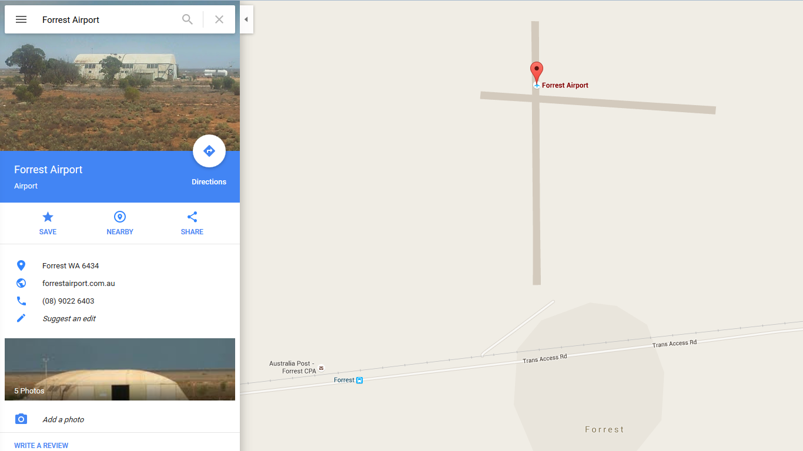
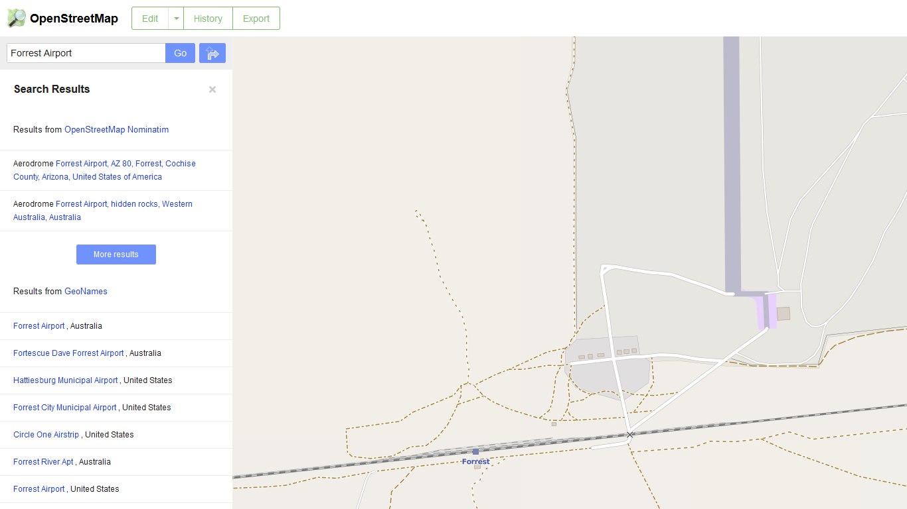

I've been using OpenStreetMap1 for about two years now. I migrated from Google Maps, mostly for philosophical reasons to do with data collection and licensing.
I think the biggest difference between the two can be summed up as:
- OpenStreetMap has much better coverage of obscure places (particularly things like hiking trails) if you are going somewhere off the beaten track where the "roads" are just a gravel path or a mud track then use the OpenStreetMap.
- Google Maps has much better search, if you are trying to find a place (particularly things like a local business) use Google Maps.
An excellent example of this is a place I stayed at for a few days on holiday when I was younger called Forrest Air Port. When I stayed there it had a population of 3.2
Google Maps finds it easily with a simple search. All it shows is the air strip and a single road. 
OpenStreetMap finds it too, but it's a bit harder to find and it's not the first result. Once you do find it through it's got a lot more detail, it's got all the four wheel drive tracks, the walking tracks, it's even got every single house in the town mapped out (all 6 of them), the airplane hangar, the Australia Post Community Postal Agents (post box) in the correct place. 
Another place I've stayed is Eyre Bird Observatory. Google maps can find it3, infact all I typed was "Eyre bi" and it had the correct suggestion. But Google Maps it puts the pin on the nearest town which is about 30 km away4 although if you change to "earth" view you can find the house. While OpenStreetMap has the marker in the right location and has the four wheel drive track marked out too.
OpenStreetMap coverage in metro areas is pretty good, but I think Google's ease of use and search has the edge.
So if your going hiking somewhere there is no phone coverage and you want to navigate by GPS using offline maps OpenStreetMap is the hands down winner.
If your in the metro area and you want to find the nearest burger joint or get navigation that includes public transport or current traffic conditions Google Maps is for you.
-
I feel that I should point out that while I try to make most of my posts security related using OpenStreetMap over Google Maps is not about security. It's a philosophical stance on licensing, freedom, and openness. I guess you could look at it from the security view of not giving your persoanl informaiton to a large coporation for more about my views on google see my post Good bye Google ↩
-
Although there were four of us, so I suppose if you count tourists it had a population of 7. ↩
-
EDIT: 2016-09-05 some time after I posted this Google Maps was updated with the right location. While this example may no longer be correct, I still find that OpenStreetMap has better coverage of obscure country towns with populations you can count without taking off your shoes. ↩
-
About 50 km by car which takes about an hour and a half because it's a sand track up an escarpment. ↩